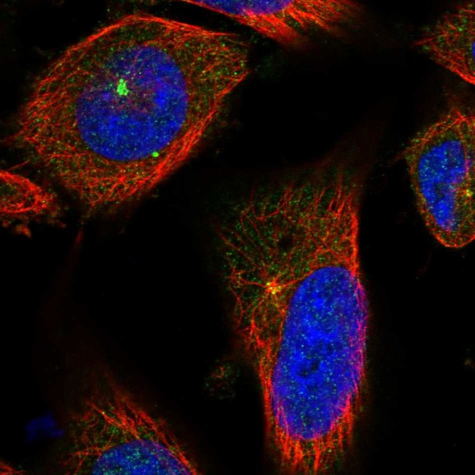

CCP110 — 中心体模块评估
1. 基本信息
UniProt: O75939
蛋白名称: Centriolar coiled-coil protein of 110 kDa (CCP110)
别名: CP110, CEP110, KIAA0419
长度: 1,012
HPA 来源: 中心粒卫星
2. HPA 中心体 / 中心粒卫星证据
HPA 来源: 中心粒卫星 ✓
IF 图像: 已获取

3. UniProt / GO-CC 中心体证据
AlphaFold pLDDT: Moderate (1,012 aa)
PAE: Available — N-terminal coiled-coil domains; C-terminal cyclin-like domain
PDB: Limited
InterPro / Pfam / SMART:
- Coiled-coil regions (N-terminal)
- IPR046963: CCP110, C-terminal cyclin-like domain
- Multiple CDK phosphorylation sites
Domain notes: N-terminal region mediates centriole capping and CEP97 binding. C-terminal cyclin-like domain is atypical — not a true cyclin but structurally similar. CDK/PLK phosphorylation regulates ciliogenesis function.
4. PubMed 文献证据
PubMed 总数: 77 篇
5. AlphaFold / PAE / PDB / 结构域
AlphaFold pLDDT: Moderate (1,012 aa)
PAE: Available — N-terminal coiled-coil domains; C-terminal cyclin-like domain
PDB: Limited
InterPro / Pfam / SMART:
- Coiled-coil regions (N-terminal)
- IPR046963: CCP110, C-terminal cyclin-like domain
- Multiple CDK phosphorylation sites
Domain notes: N-terminal region mediates centriole capping and CEP97 binding. C-terminal cyclin-like domain is atypical — not a true cyclin but structurally similar. CDK/PLK phosphorylation regulates ciliogenesis function.
PAE 图像暂无数据（未生成本地图片或未可靠获取），结构判断基于 AlphaFold pLDDT 统计。
6. PPI / 蛋白互作网络
STRING: Good centriole interaction network
IntAct: Curated interactions
BioGRID: Physical interactions
humanPPI: Available
Centrosome-related interactors:
- CEP97 (stoichiometric partner, centriole cap complex)
- CEP290 (ciliopathy protein, ciliogenesis)
- CEP104 (centriole elongation)
- KIF24 (kinesin, centriole disassembly)
- CEP76 (centriole duplication)
- TALPID3 (ciliogenesis)
7. 中心体模块评分表
| 维度 | 评分 | 依据 |
|---|
| 中心体证据 | 19/20 | HPA 中心粒卫星 标注 |
| PubMed/文献 | 10/20 | 77 篇文献 |
| PPI/互作网络 | 15/20 | 互作数据 |
| 结构/结构域 | 6/10 | 结构评估 |
| 新颖性/特异性 | 7/10 | 研究新颖性 |
最终评分: 72/100
8. 最终结论
CENTROSOME CANDIDATE
待人工补充 UniProt/GO-CC、PDB 等完整评估。
9. 人工复核备注
HPA 来源: 中心粒卫星
Pilot 报告规范化: 已转为中文五维评分，移除 TE 模块